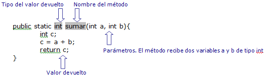

🖲️ Introducción y práctica con métodos en Java
🧠 ¿Qué es un método?
Un método es un bloque de código con un nombre que ejecuta una tarea. Sirve para reutilizar lógica, organizar el programa y evitar duplicidad.
- Están siempre dentro de una clase.
- Se invocan con su nombre y paréntesis:
saludar(); - Pueden recibir parámetros y devolver un valor con
return.
🧱 Anatomía de un método

[modificador] [static] tipoDeRetorno nombreMetodo([parámetros]) {
// cuerpo
// opcionalmente: return valor; // si tipoDeRetorno no es void
}
- Modificador (visibilidad):
public,private,protected. static: si lo añades, el método pertenece a la clase (se llama comoClase.metodo()).tipoDeRetorno: tipo del valor devuelto. Usavoidsi no devuelve nada.- Nombre: en lowerCamelCase, claro y expresivo.
- Parámetros: variables de entrada, separadas por comas.
🔎 Regla útil: si un método hace más de una cosa, probablemente deba dividirse en varios.

👋 Métodos void (sin retorno)
public class Main {
public static void main(String[] args) {
saludar(); // invocación
repetirSaludo("Ada", 3); // invocación con parámetros
}
public static void saludar() {
System.out.println("¡Hola!");
}
public static void repetirSaludo(String nombre, int veces) {
int i = 0;
while (i < veces) {
System.out.println("Hola, " + nombre);
i++;
}
}
}
- No llevan
returncon valor (pueden llevarreturn;a secas para salir antes del método).
🎯 Métodos con valor de retorno
public class Main {
public static void main(String[] args) {
int total = sumar(7, 5); // 12
System.out.println("Total: " + total);
boolean ok = esPar(total); // true si total % 2 == 0
if (ok) {
System.out.println("El total es par");
}
}
public static int sumar(int a, int b) {
int r = a + b;
return r; // 👈 devuelve el valor
}
public static boolean esPar(int n) {
return n % 2 == 0; // 👈 return “directo”
}
}
💡 Tras ejecutar
return, el método termina. El código que haya después no se ejecuta.
↩️ return: patrones habituales
1) Salidas tempranas (evitar else anidados)
public static int puntuacionFinal(boolean gameOver, int base, int nivel, int bonus) {
if (!gameOver) return -1; // salida temprana
int total = base + (nivel * bonus);
total += 100;
return total;
}
2) Valor “por defecto” + actualización condicional
public static int puntuacionFinal2(boolean gameOver, int base, int nivel, int bonus) {
int total = -1; // valor por defecto
if (gameOver) {
total = base + (nivel * bonus) + 100;
}
return total;
}
🧭 Parámetros vs. argumentos (y paso por valor)
- Los parámetros son las variables de la declaración del método, dentro de los paréntesis.
- Los argumentos son los valores concretos que pasas al invocar, cuando llamas al método.
- En Java todo se pasa por valor: el método recibe copias de los valores (para tipos primitivos).
public static void incrementar(int n) { // ← aquí 'n' es un PARÁMETRO
n = n + 1;
}
public static void main(String[] args) {
int x = 5;
incrementar(x); // ← aquí 'x' es un ARGUMENTO
System.out.println(x); // 5 → no cambió
}
⚠️ Errores frecuentes
- ❌ Olvidar
returncuando el método no esvoid. - ❌ Escribir código después de un
return(es inaccesible). - ❌ Usar
==para compararStringen lugar deequals. - ❌ Crear un método que hace demasiadas cosas (difícil de testear/reutilizar).
Ejemplo
public class Main {
public static void main(String[] args) {
boolean gameOver = true;
int puntuacion = 5000;
int nivelCompletado = 5;
int bonus = 10;
int score = calcularPuntuacion(gameOver, puntuacion, nivelCompletado, bonus);
System.out.println(score);
//otra forma de hacerlo es pasarle directamente el valor de las variables
score = calcularPuntuacion(true, 1000, 10, 30);
System.out.println(score);
}
public static int calcularPuntuacion(boolean gameOver, int puntuacion, int nivelCompletado, int bonus) {
if (gameOver) {
int puntuacionFinal = puntuacion + (nivelCompletado * bonus);
puntuacionFinal += 100;
return puntuacionFinal;
} else {
return -1;
}
}
//OTRAS FORMAS MÁS EFICIENTES DE CREAR EL MÉTODO calcularPuntuaciones
//1. Método más eficiente sin sentencia else
public static int calcularPuntuacion(boolean gameOver, int puntuacion, int nivelCompletado, int bonus) {
if (gameOver) {
int puntuacionFinal = puntuacion + (nivelCompletado * bonus);
puntuacionFinal += 100;
return puntuacionFinal;
}
return -1;
}
//2. Otra forma de realizar el método calcularPuntuacion sin utilizar dos sentencias de return sería
public static int calcularPuntuacion(boolean gameOver, int puntuacion, int nivelCompletado, int bonus) {
int puntuacionFinal = -1;
if (gameOver) {
int puntuacionFinal = puntuacion + (nivelCompletado * bonus);
puntuacionFinal += 100;
}
return puntuacionFinal;
}
}
🧰 Buenas prácticas con métodos
🔁 ¿Uno o varios return?
- Varios
returnestán bien cuando aclaran el flujo (guard clauses / salidas tempranas). - Evita múltiples
returnsi eso oculta casos o complica leer la función.
Regla práctica:
- Métodos cortos → OK varios return (más legibles).
- Métodos largos/condicionados → intenta simplificar primero; si no, considera 1 return al final.
Ejemplo (mejor con salidas tempranas)
public static int puntuacionFinal(boolean gameOver, int base, int nivel, int bonus) {
if (!gameOver) return -1; // guard clause: caso inválido, salimos
int total = base + nivel * bonus;
total += 100;
return total; // return principal
}
El mismo ejemplo con un único return (correcto pero más verboso)
public static int puntuacionFinalUno(boolean gameOver, int base, int nivel, int bonus) {
int total = -1;
if (gameOver) {
total = base + nivel * bonus + 100;
}
return total;
}
🧩 Una sola responsabilidad
- Un método debería hacer una cosa y hacerla bien.
- Si el nombre necesita “y”, probablemente hay dos métodos ahí.
🏷️ Nombres claros (lowerCamelCase)
- Verbos para acciones: calcularTotal, imprimirMenu.
- Booleanos que lean como pregunta: esPar, tienePermiso.
🧪 No mezclar responsabilidades de E/S
- Si devuelves un resultado, evita imprimir dentro del mismo método.
- Mejor: un método calcula y devuelve; otro método imprime.
🎛️ Parámetros: pocos y relevantes
- Apunta a ≤ 3 parámetros (si necesitas más, quizá falta una clase/estructura o dividir el método).
- Evita parámetros bandera (true/false) que cambian el comportamiento interno; separa en dos métodos (calcularConImpuestos vs calcularSinImpuestos).
🚪 Salidas tempranas (guard clauses)
- Úsalas para validaciones y casos borde al inicio:
public static void mostrarAlumno(String nombre, int edad) {
if (edad < 0) return; // salida temprana: dato inválido
System.out.println("Alumno: " + nombre + " (" + edad + ")");
}
🔒 Errores y valores especiales
- Evita valores “mágicos” como -1 si pueden confundir. Si el temario aún no cubre excepciones, documenta claramente qué significa el valor especial.
🧼 Mutaciones y efectos secundarios
- Prefiere métodos puros (que no cambian estado global) cuando sea posible; son más fáciles de probar.
- Si un método modifica algo, que el nombre lo sugiera: actualizarPuntuacion().
📏 Tamaño y anidación
- Métodos cortos (10–20 líneas) y con poca anidación son más legibles. Si aparecen varios if anidados, extrae métodos o usa salidas tempranas.
🔁 Coherencia con static
- Mientras trabajes en main, usar static simplifica las llamadas. Más adelante (POO) moverás lógica a métodos de instancia.